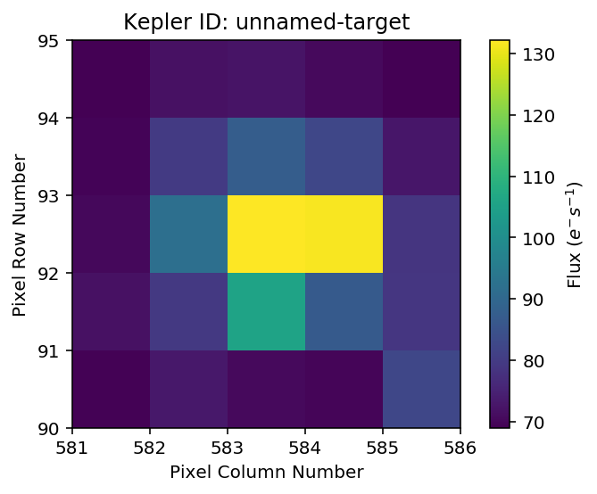

How to cut out Target Pixel Files from Kepler Super Stamps or TESS FFIs¶
You can use lightkurve to cut Target Pixel Files (TPFs) out of a
series of standard astronomical images, such as K2 Superstamp
Mosaics or TESS
Full-Frame-Images (FFIs). This brief tutorial will demonstrate how!
In [23]:
%matplotlib inline
from lightkurve import KeplerTargetPixelFile
from glob import glob
import numpy as np
Let’s assume you have downloaded a set simulated TESS FFI
images to a local
directory called data. lightkurve will assume that the files are
given in time order. So we’ll sort the filenames first:
In [28]:
fnames = np.sort(glob('data/*.fits'))
Now we use the KeplerTargetPixelFile class and its function
from_fits_images() to create the new TPF. This will cut out around
the position keyword. You can pass a pixel position in units of the
original image or RA and Dec coordinates.
In [29]:
tpf = KeplerTargetPixelFile.from_fits_images(images=fnames,
position=(197,210),
size=(5,5))
100%|██████████| 45/45 [00:01<00:00, 39.26it/s]
In [30]:
tpf.plot()
Out[30]:
<matplotlib.axes._subplots.AxesSubplot at 0x1c17d4dac8>

In [31]:
tpf.to_lightcurve().plot()
Out[31]:
<matplotlib.axes._subplots.AxesSubplot at 0x1c1b9f2d68>